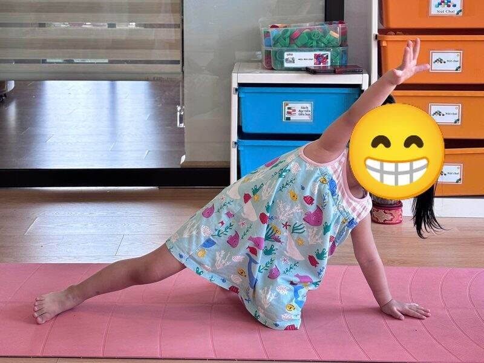

Chủ đề 39 · Hạt giống nảy mầm
Hạt Đậu Nhỏ lớn lên
🌟 Bài học trong câu chuyện
Giới luật yoga: Tapas – Kiên trì, cố gắng. Bé không bỏ cuộc, thử lại từng chút một.
Kỹ năng sống: Chăm sóc cây, kiên nhẫn chờ đợi.
1. Khởi động (2 phút)
Cả lớp ngồi xếp bằng thành vòng tròn. Cùng thở 3 hơi thở bông hoa: hít vào bằng mũi như ngửi hoa, thở ra bằng miệng thật chậm. Chắp tay trước ngực và chào nhau: “Namaste, chào các bạn!”
2. Câu chuyện: Hạt Đậu Nhỏ lớn lên (đọc cho bé nghe, 4 phút)
Cô đọc trọn câu chuyện cho bé nghe trước. Sau đó cô kể lại từng đoạn ngắn và cả lớp cùng tập 10 tư thế ở phần bên dưới.
Bé Na được cô tặng một Hạt Đậu Nhỏ. Na gieo hạt vào cốc đất, đặt bên cửa sổ, rồi cúi xuống tưới nước: "Hạt Đậu ơi, lớn nhanh nhé!"
Ngày thứ nhất, chẳng thấy gì. Ngày thứ hai, vẫn chẳng thấy gì. Ngày thứ ba, Na hơi buồn: "Hay hạt đậu không lớn được?". Nhưng Na vẫn tưới nước, vẫn đặt cốc ra chỗ có nắng. Dưới lớp đất, những chiếc rễ nhỏ đang bám thật chặt.
Ngày thứ năm, Na reo lên: một mầm xanh bé tí đã nhú lên khỏi mặt đất! Ngày nào Na cũng chăm, mầm lớn dần thành cây non, rồi thành cây cao hơn. Những chiếc lá xanh mở ra đón nắng.
Một sáng, Na thấy một nụ hoa nhỏ xinh khép lại như đôi bàn tay chắp. Vài hôm sau, hoa nở bung, rực rỡ.
Một chú Ong bay đến hút mật, kêu "ừmmm". Na vui sướng chạy đi gọi mẹ: "Mẹ ơi, con chờ đợi và chăm sóc mỗi ngày, cây đã nở hoa rồi!"
3. Kể lại và tập 10 tư thế (6 phút)
-
 1
1Hạt giống nhỏ
🧘 Tư thế Ôm gối tròn (Ball)
Lời kể khi tập: Hạt Đậu nằm ngủ trong đất. Mình cuộn tròn làm hạt đậu.
Cách làm: Ngồi hoặc nằm, ôm hai gối sát vào ngực, cuộn tròn người như quả bóng. Giữ 3 đến 5 nhịp thở.
-
 2
2Tưới nước
🧘 Tư thế Gập người đứng (Forward Fold)
Lời kể khi tập: Na cúi xuống tưới nước. "Tưới tưới tưới!"
Cách làm: Đứng, gối hơi chùng, cúi gập người, hai tay buông thả xuống sàn. Giữ 3 đến 5 nhịp thở.
-
 3
3Mầm nhú lên
🧘 Tư thế Em bé (Child's Pose)
Lời kể khi tập: Ngày thứ ba, chưa thấy gì. Na hơi buồn nhưng vẫn tưới tiếp.
Cách làm: Quỳ gối, ngồi lên gót chân, cúi người cho trán chạm thảm, hai tay duỗi ra trước hoặc để xuôi bên người. Giữ 3 đến 5 nhịp thở.
-
🌻Ảnh tư thế đang cập nhật4
Rễ cây bám đất
🧘 Tư thế Ngọn núi (Mountain)
Lời kể khi tập: Dưới đất, rễ cây đang bám thật chặt.
Cách làm: Đứng thẳng, hai bàn chân sát nhau, tay xuôi hai bên, vai thả lỏng, mắt nhìn thẳng. Giữ 3 đến 5 nhịp thở.
-
💧Ảnh tư thế đang cập nhật5
Cây non
🧘 Tư thế Vươn tay lên cao (Upward Salute)
Lời kể khi tập: Ngày thứ năm, mầm xanh nhú lên! Mình vươn tay lên cao.
Cách làm: Đứng thẳng, hai tay vươn cao qua đầu, lòng bàn tay áp vào nhau, kiễng nhẹ. Giữ 3 đến 5 nhịp thở.
-
 6
6Cây lớn
🧘 Tư thế Cái cây (Tree)
Lời kể khi tập: Cây lớn dần mỗi ngày nhờ Na chăm sóc.
Cách làm: Đứng một chân, bàn chân kia đặt vào bắp chân hoặc đùi (không đặt lên đầu gối), hai tay chắp trên đầu. Giữ 3 đến 5 nhịp thở.
-

7Chiếc lá
🧘 Tư thế Tấm ván nghiêng (Side Plank)
Lời kể khi tập: Lá non xanh mở ra đón nắng.
Cách làm: Chống một tay, nghiêng người, hai chân chồng lên nhau, tay kia vươn lên. Bé có thể hạ gối dưới. Giữ 3 đến 5 nhịp thở.
-
 8
8Nụ hoa
🧘 Tư thế Ngồi xếp bằng (Easy Pose)
Lời kể khi tập: Một nụ hoa nhỏ xuất hiện. Mình chắp tay như nụ hoa.
Cách làm: Ngồi xếp bằng, lưng thẳng, hai tay đặt nhẹ trên đầu gối. Giữ 3 đến 5 nhịp thở.
-
🐝Ảnh tư thế đang cập nhật9
Hoa nở
🧘 Tư thế Nữ thần (Goddess)
Lời kể khi tập: Hoa nở rồi! Mình mở rộng tay chân.
Cách làm: Dang rộng hai chân, mũi chân hướng ra ngoài, gập gối, hai tay mở rộng hai bên. Giữ 3 đến 5 nhịp thở.
-
🌻Ảnh tư thế đang cập nhật10
Ong hút mật
🧘 Tư thế Thở tiếng ong (Bee Breath)
Lời kể khi tập: Ong bay đến "ừmmm". Na reo lên: "Chờ đợi và chăm sóc mỗi ngày, cây đã nở hoa!"
Cách làm: Ngồi, dùng ngón tay bịt nhẹ hai tai, hít vào, thở ra kêu "ừmmm" như ong bay. Giữ 3 đến 5 nhịp thở.
4. Thư giãn (2 phút)
Các con nằm ngửa, tay chân thả lỏng, nhắm mắt lại. Cô nói nhẹ: “Hít vào thật chậm… thở ra thật chậm… Con nhớ lại câu chuyện vừa rồi, nhớ người bạn mình thích nhất trong truyện. Cơ thể con mềm như bông, nhẹ như mây.” Sau đó các con nghiêng người, từ từ ngồi dậy.
5. Trò chuyện cùng bé (1 phút)
Na chăm cây mỗi ngày dù chưa thấy mầm, và cây đã nở hoa. Kiên trì là Tapas.
Cô hỏi các con:
- Cây cần gì để lớn?
- Con có muốn trồng một cái cây không?
Kết thúc bằng lời chào “Namaste” và một nụ cười.
Lưu ý cho thầy cô và bố mẹ: Tập trên thảm, không tập ngay sau khi ăn no. Bé chỉ làm tới mức thấy dễ chịu, không ép bé. Tư thế đứng một chân có thể cho bé vịn tường hoặc vịn tay người lớn.